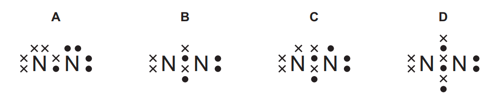
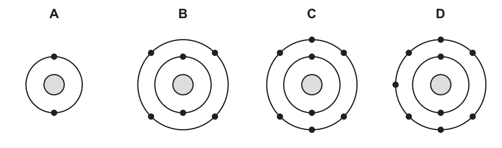

1. _____ which is atom with same element, that have a different number of neutrons.
2. The average mass of the _____ of an element, relative to 1/12th of the mass of _____
3. _____: the change of physical state from gas to liquid.
4. 2311Na nucleon number is _____
5. Ionic bond is a strong _____ attraction between oppositely charged ions
6. _____ is formed when a pair of electrons is shared between two atoms leading to noble gas electronic configurations.
7. _____ is the electrostatic attraction between the positive ions in a giant metallic lattice and a 'sea' of delocalised electrons
8. The _____ for making ammonia under 450℃, 200atm, and Fe as catalyst.
9. What is the Avogadro constant?
10. _____ is the decomposition of an ionic compound, when molten or in aqueous solution, by the passage of an electric current.
11. The _____ as the molten or aqueous substance that undergoes electrolysis.
12. _____ (coating with zinc) is an example of a barrier method and sacrificial protection.
13. Colour of methyl orange in alkaline solution is _____, colour of thymolphthalein is acidic solution is _____
14. An _____ transfers thermal energy to the surroundings leading to an increase in the temperature of the surroundings
15. The transfer of thermal energy during a reaction is called the _____ of the reaction.
16. _____, Ea, as the minimum energy that colliding particles must have to react.
17. Catalyst increase the rate of a reaction and is _____ at the end of reaction.
18. Write down the electronic configuration of Chloride ions (Cl-): _____
19. What is meant by the term acid? _____
20. What is meant by the term strong acid: an acid that is _____ dissociated in aqueous solution
21. What is meant by the term weak acid: an acid that is _____ dissociated in aqueous solution
22. Al2O3 and ZnO are examples of _____ oxides.
23. Hydrated substance is a substance that is _____ combined with water.
24. _____ as the water molecules present in hydrated crystals.
25. Alkali metal: _____ metal in the periodic table.
26. Halogen: _____ elements in the periodic table.
27. Alloy is a _____ of a metal with other elements.
28. Photosynthesis the reaction between _____ and _____ to produce _____ and _____ in the presence of chlorophyll and using energy from light.
29. Write down equation represents photosynthesis.
30. Functional group is an atom or group of atoms that determine the chemical properties of a _____
31. Saturated compound: molecules in which all carbon--carbon bonds are _____
32. Hydrocarbon is a compound containing _____
33. Polymers as large molecules built up from many smaller molecules called _____
34. Which diagram represents the outer-shell electron arrangement in a nitrogen molecule?
35. Which diagram represents the arrangement of the outer-shell electrons of a noble gas?
36. _____ is loss of electrons.
37. _____ has a decrease in oxidation number.
38. Oxidising agent is a substance that _____ another substance and is itself _____
39. Reducing agent is a substance that reduces another substance and is itself _____
40. When a reversible reaction reach its equilibrium, the concentration of reactants and products _____
41. _____ is a solution containing the maximum concentration of a solute dissolved in the solvent at a specified temperature
42. Bromine is a _____ at room temperature and pressure.
43. Iodine is a _____ at room temperature and pressure.
44. Stainless steel as a mixture of iron and other elements such as _____
45. _____ as compounds with the same molecular formula, but different structural formulae
46. State that an _____ has molecules in which one or more carbon--carbon bonds are not single bonds.
47. In a _____ one atom or group of atoms is replaced by another atom or group of atoms.
48. Fermentation of aqueous glucose at _____°C in the presence of _____ and in the absence of oxygen.
49. _____ as natural polyamides and that they are formed from amino acid monomers
50. Sources of the sulfur dioxide in the contact process is _____